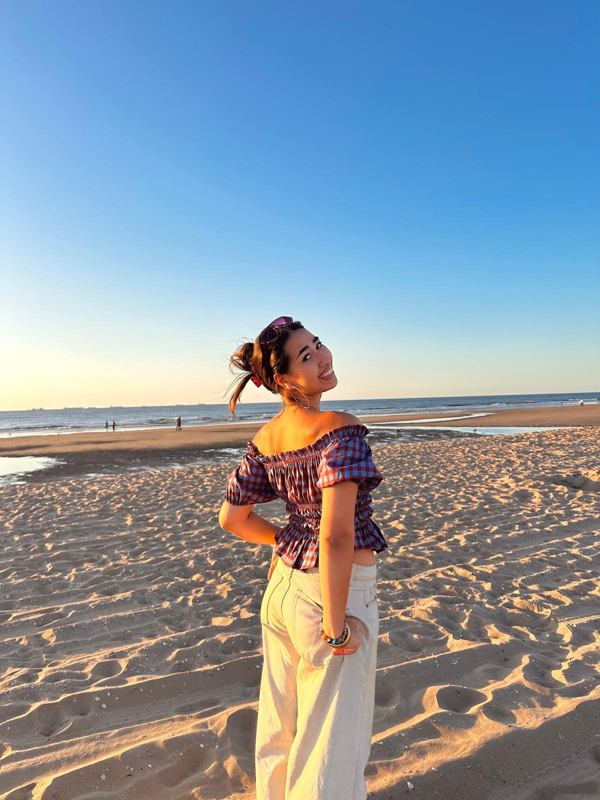

Wie ben ik?
Als je aan de woorden: Enthousiast, sociaal, energiek en dansen denkt. Dan denk je waarschijnlijk aan mij. Ik ben Fleur Karamati, een tweede jaars student aan de opleiding Communication & Multimedia Design in Amsterdam. Hierop zal ik jullie meenemen in alle werken die gemaakt heb en de dingen die ik doe. Naast het feit dat ik heel erg van ontwerpen houd, ben ik ook sinds een paar jaar professioneel danser. Hierop zul je dus niet alleen mijn schoolwerken zien, maar ook de nieuwe danswerken/-projecten die ik doe of maak. Neem gerust even een kijkje!
